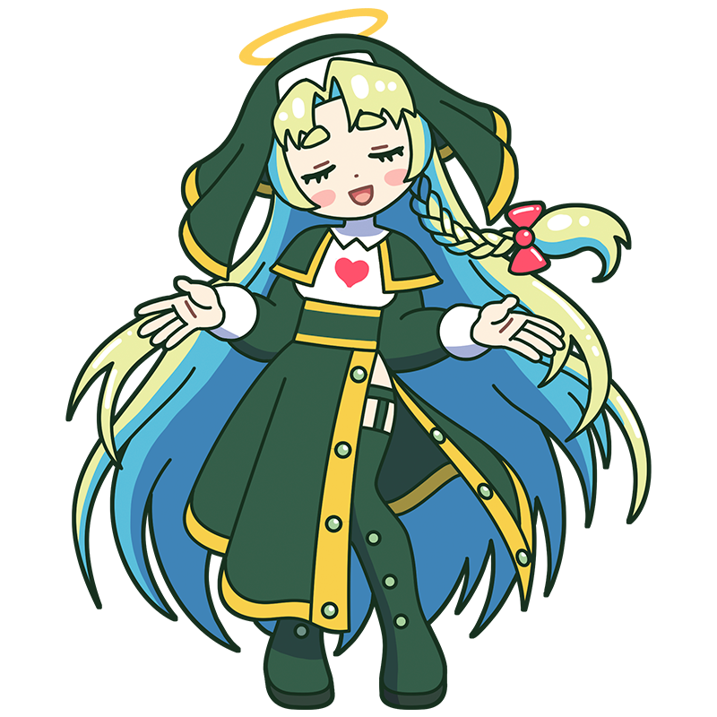

私が、無上の愛を注いであげましょう。
偉大なる芸術の娘たち……。
ドニ
聖なる教えを授ける母
すべては愛する娘たちのために
ナビ派の中心人物である、慈愛と信仰のミューズ。すべてのミューズを娘と呼び、迷える者を救おうと布教活動に励んでいる。家族のように接しているつもりだが、少々愛が重すぎる……かも？
様式
ナビ派
出身国
フランス
代表作
- 『ボクシング』
- 『セザンヌ礼賛』
- 『天国』など
ドニといえばこの一枚！
ボクシング
二人の幼い兄弟が遊ぶ様子を描いた作品。モデルは、ドニと最初の妻マルトの間に生まれた長男ドミニク（左）と次男フランソワ（右）である。ドニは生涯で2度結婚し、9人の子どもをもうけた。家族を題材とした作品を数多く制作したほか、日記にも家庭での出来事を記録しており、家族との暮らしを大切にしていたことがうかがえる。
制作年
1918年
技法・材質
油彩、キャンバス
寸法
83.3 cm x 69 cm
所蔵
個人蔵
作品画像出典: https://commons.wikimedia.org/wiki/File:%27Boxing%27_by_Maurice_Denis,_1918.jpg
ドニってどんな芸術家？
モーリス・ドニ
ナビ派の結成メンバーの一人で、グループ最年少の画家。仲間たちの中でも特に敬虔なキリスト教徒で、神秘的な宗教画を数多く手掛けたことから「美しきイコンのナビ」と呼ばれた。その一方で、色彩や形状について研究を重ねた理論派でもあり、緻密な構成に基づいた作品は、整っていながらも穏やかで幸福感に満ちている。2度の結婚を経験し、妻や子供たちと暮らす家庭もまた彼の創作の題材となっていた。
フルネーム
Maurice Denis
誕生
1870年11月25日
死没
1943年11月13日(72歳没)